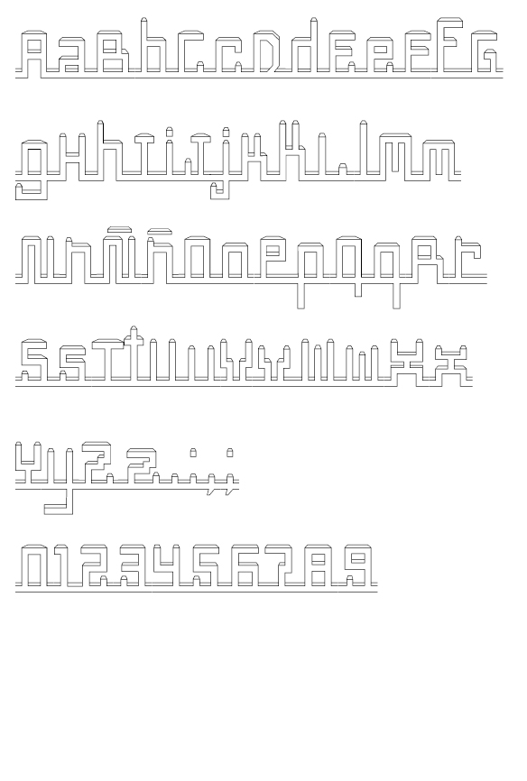

Ciudadela es una tipografía sinestésica basada en el horizonte de la Ciudad de México. Juega con el límite de letra y forma generando paisajes urbanos con su diseño tridimensional y está pensada para funcionar en textos de varios renglones. Los patines continuos provocan una sensación de fluidez sobre la calle, mientras que las letras altas y bajas forman los edificios. Ciudadela crea espacios en el papel, es una tipografía que no se limita a un medio bidimensional.
